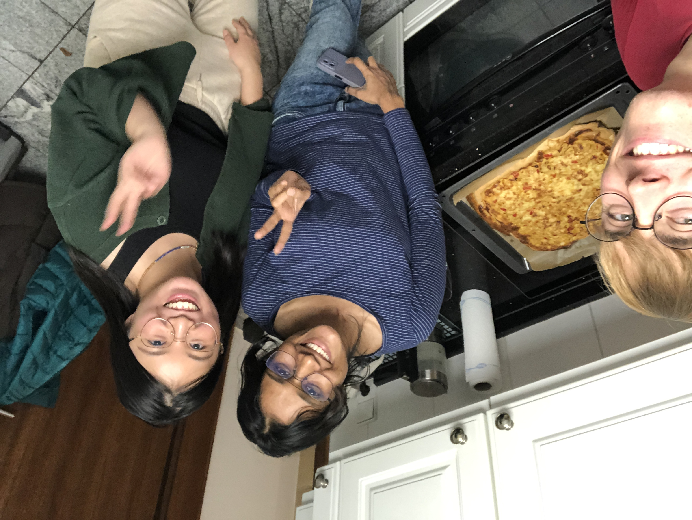
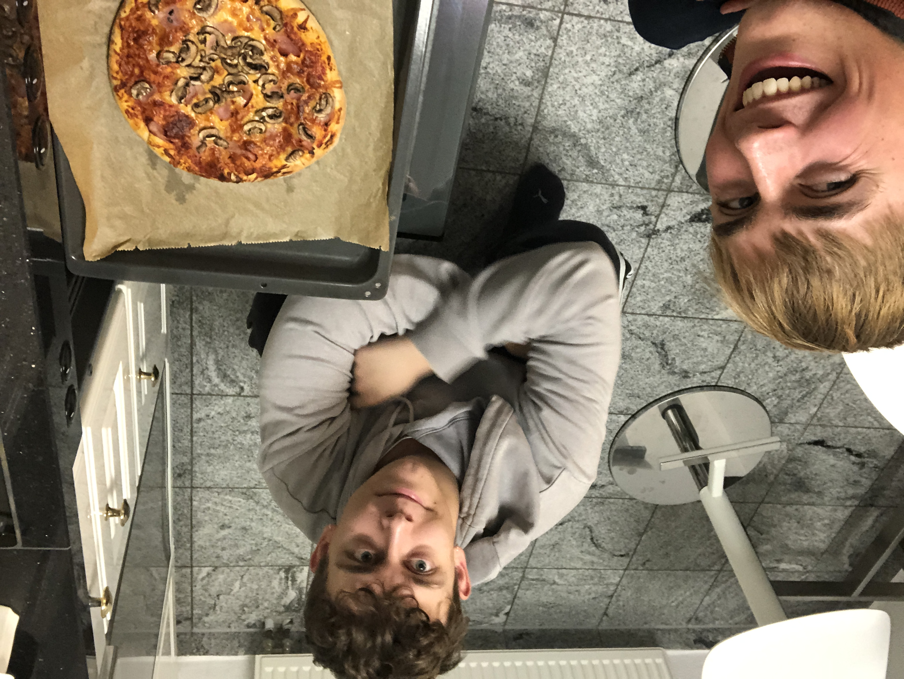

Home
October
December!
Negligence in November
What's going on
I went for a nice long walk and listened to "What's Going On". James and I watched a few episodes of Rick and Morty and
then I watched A close shave (Wallace and Grommit)! On Thursday, I went to the weekly HIT class and had a brilliant session:
I really pushed myself, as I was a little late, and felt ecstatic afterwards.
Later that day, I also watched Coco (I would recommended 👍) with Will, which was really nice.
On Friday, I had a fun call, working on our internal wiki, with Lisa. In the evening, Nico kindly invited me for dinner at "The Korean Restaurant" (an inventive name), with some of his college mates:
Amelie, Anna and Olivia. Afterwards, we went to the Urban Kitchen, ordered cocktails (which came with a marshmellow!), and then
played the "Am I?" game. We all tried to figure out which character or celebrity we were, based on yes-no questions. It was
a wonderful evening: I practiced my German, laughed a lot, met some great new people and, of course, caught up with Nico.
On Saturday, after a healthy lie in :), I did a little work and then went shopping with Sruthi (as we planned to cook a meal).
Then, after waiting for a bus for ages, had to cycle to the Sankt Leon Rot Kerwe, with Nico and some of his elementary school mates.
Google Maps let me down because it sent me down a path that became more and more boggy as I went, and less and less path-like,
but at such a slow rate, that by the time I considered retracing my steps... it was too late.
None the less, after the little mishap and a right turn after the infamous Daddy's Grill, I arrived at the Kerwe and united with the posse.
We wandered and pondered, and then we ate 😋. Nico and I shared a Honey and Almond Schokokuss — a flavoured marshmellow, coated in chocolate —
and we visited the music zones. Nico's mates headed off and after some more chatting, so did I.
However, the sky opened the flood gates. I raced through the biblical downpour, at time aquaplaning across the spirit-level-flat
paths. I took a slightly different route to avoid the swampish terrain but this longer route resulted in extra wetness. It was an adventure alright,
and twenty minutes later, I arrived home, soaked to the bone.
After, indulging in a nice shower, I gave Dylan a ring and we had a nice catchup chat, as well as watching a little of
Your Lie In April.
On the Sunday, I had a lovely chat with Grandma, did some yoga, called Mum, went for a walk and then cooked Zwiebelkuchen
(literally onion cake) with my old housemate Sruthi and her new housemate Feng. It consists of a fluffy pizza-like base,
with a creamy, eggy, onion and pepper topping. We made the dish together and played cards whilst it cooked. Later in the evening, I also discovered
that my new room mate would be Lenard, a friend of Lisa's from the working-student scheme, whom I'd met the week before in the gym!
To conclude the weekend, I went for a jog and then had a great birthday chat with Will.

Week 2!!
I began the week in an unusual fashion: I awoke a whole hour earlier! I made my bed, brushed my teeth (thoroughly) and
screwed on my head. Then I headed in for a MongoDB (DB=database) workshop, where they had the creamiest coffee ever! Sadly,
the event didn't begin for almost an hour... And, once commencing, I quickly identified that the lingua franca
was German. Nonetheless, it was interesting and insightful 😁
In the evening, I went to the weekly discussion group, where I was starting to get to know people. Afterwards, I made a Victoria
Sponge for Petra, Karl-Heinz and Jula; the office team; a bit for the housemates; some for Sruthi; and some for me (it was pretty big).
Tuesday = Bachata! It was a great session, I got to try the difficult Salsa class and I even stayed a bit afterwards to practice Bachata.
On the Wednesday, I went for a nice meal with Manuel (who also attends the discussion group). We initially struggled as we turned up
to "The" Flammkuchen restaurant without a booking. Instead, we went to a lovely Italian restaurant and surpassed our step goals for the day.
On Thursday, I went to my HIT class and then chatted with mates on Discord. To wrap up the week, I had a busy, hard-working Friday
and spent some time responding to audio messages (some German and some English).
Controlled chaos
I had volunteered to help at the SAP badminton tournament and we had been briefed earlier in the week about what to do, as well as where
help was needed: I would be on check-in first and then the Springer (stand-in/job-filler).
So on Saturday morning, Johanna kindly gave me a lift and we began the setup. Then, as contestants slowly began to trickle in, I was assigned
to the entry door. I eagerly dispensed leaflets and wristbands, with a smile on my face.
However, after the first rounds, the operation ground to a halt, due to issues with the spreadsheet. After a brief panic
and a calm discussion, we turned the rout, and ambushed the problem head-on: we switched back to a good old paper tournament tree.
The rest of the day went smoothly and was very rewarding. I got to know some of the team much better and a board member even showed up for a little while.
Sunday
One of my flatmates is religious, so suggested we go to church. So we did. I believe it was Lutherian church and whilst I missed a lot of
what happened, I was able to practice my listening and thought the service was lovely. I also found it interesting to see the differences between services, I had
been to before. For example, there were solos at the beginning of hymns and, whilst I was "used" to saying 'Amen' in the call-and-response sections, this service had
singing responses. The hymns also had more complicated rhythms but did have musical notation to help you.
James and I had a chinwag and then Lisa came around to teach me some card games. We tried Mau-Mau and Arschloch for a bit and then Lenard returned.
I promptly devoured a Persimmon and then we all had a beer whilst playing Schwimmen. Later on, we played Mario Kart and I had a brief ride on Lisa's motorcycle!
Fun fact: In large animal migrations, plains zebras often take the lead. They eat the tougher
grass and the trailing animals consume the fresh, soft new shoots. Zebras stripes are unique to each animal and act as
a deterrent to tsetse fly bites, as they don't like landing on stripes.
Finally, these plains zebras, like horses, often sleep standing.
Cresting the hill
On Monday, I had a long day at work; then practiced my Bachata for a little while; did a mini workout; and then I had a lovely chat with Lenard and Michael.
On Tuesday, I went for a Döner with Lenard and Michael. Then we went for a walk and later had a talk (we set a date for Michael to teach me Cribbage).
I was listening to a recommended John Coltrane album and Michael identified the song through the wall and recommended the next song on the album to me😂 What a dude!
Wednesday was really interesting as I learnt lots more about how SAP works, what their aspirations are and more of the SAP business model. The evening was fantastic because I first
had a coffee with Nico and then I made Bubble n Squeak with Sruthi and Feng. We had a great laugh making it, especially when we thought the butter was mouldy but
it was actually just herbs. We were so happy with this that we did get a bit carried away with how much herb butter we used, but it certainly made it tasty.
We played a little cards after and I met some of the other fantastic flat members.

Thursday was pretty quiet, but I had a great lunch chat with Axel. On Friday, I began my travels to Köln where I planned to catch a flight. On the way, I got chatting with
a person I ran for a train with, and we happened to have an almost identical route, so we stuck together through all the delays, until Köln. We had some fascinating chats,
and shared some awesome (buttered) Brezels (5/5).
I walked around the Dom, the tight alleys, the Roman streets and past the bridge before retiring to my apartment, working a little, and then chatting with my room mates:
two brothers from Brazil, a lady from Turkey who was a travel expert and a man from Austria — then I collapsed on my bed.
I awoke at 1:30am, due to my snoring neighbour. I did not spring out of bed; in fact, I almost fell back to sleep. However, I did awaken and made my way across a lock
laden bridge, to the station. There was sadly a delay, but luckily an emergency bus arrived.
The flight went well and T kindly welcomed me back.
The rest of Saturday was relaxed and I enjoyed cooking a little with Mum and catching up with my family (plus my old scout leader, Phil, and Jane). On Sunday, we
had a wonderful day with lots of family and lots of chats (plus a few games)!
Alex and Giles come to stay
They arrived on the Sunday and then stayed with us for a wonderful week of fun. I mainly worked in the days, but in the evening we chatted (a lot) and played lots of cards.
We watched A Fish Called Wanda; went to a Swindon game — which was (apparently) the lowest turnouts ever); had Fish & Chips, Pasties and Gumbo; and went for a refreshing
couple of pints. James joined us for two evenings and Alex went to stay with him for an evening.
Overall, it was a delightful week, it was so wonderful to catch up and see my family and laugh so much. But life goes on, so on the 25th I caught an early flight back to Germany.
Then I took the train all the way home, stopping off to explore Mainz a little. It has a lot of grand, red buildings and a legendary cathedral. It was nice to see the
Christmas market being assembled, and for one day in November, I stepped into Christmas.
Glühwein, biscuits, cards and a chat
I did a little work on the Sunday and then headed to Niklas' to meet Lisa, Can and Lenard for some cards and to make a lot of cookies. We made spiced
warm apple juice and then decorated the biscuits. We played a few new cards games too. And afterwards, Lenard and I spent ages kneading pizza dough, but it was
totally worth it (because it was really scrummy).

Last days in November
The last November week was tough because I discovered that my solution to a problem was not going to work (ever), so I had a few heavy gym sessions and runs. But overall,
I made progress, ordered lots of Christmas gifts and had a nice time catching up with colleagues. There is the Tea for Two scheme within the SAP student community,
where you meet a random student. I met Paula through this and we happened to be on the same team, so scheduled a weekly catchup. She introduced me to some other mates at lunch,
including Melissa and Mark, the latter whom accompanied me to the Walldorf Christmas market on Friday.
In the office, we also made a fun Happy Holidays greetings video. And on the Thursday, after work, Lisa, Sebastian, Jan, Jonas and I headed to the magical Heidelberg market,
which is spread across the various plazas of the old town. It was really nice to chat about (mostly) non-work topics and get to know the lads a little more.
Home
October
December